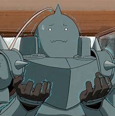

Alphonse Elric
Al/Lata Velha


Sobre
Alphonse Elric é protagonista da série Fullmetall Alchemist junto com seu irmão, Edward. Um ano mais novo que seu irmão, Al também é vítima do fracassado experimento de Transmutação Humana.
Tendo tido todo o seu corpo físico sendo tirado dele após a tragédia, Alphonse existe apenas como uma alma alquimicamente ligada a uma grande armadura de aço.
Agora, Al viaja com seu irmão em busca da lendária Pedra Filosofal, um item com o poder de restaurar seus corpos ao normal.